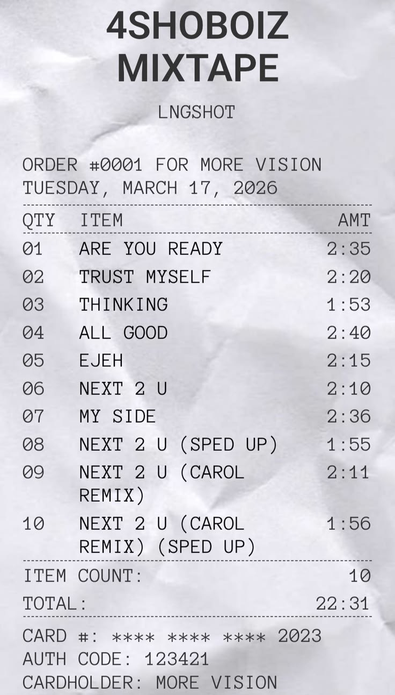
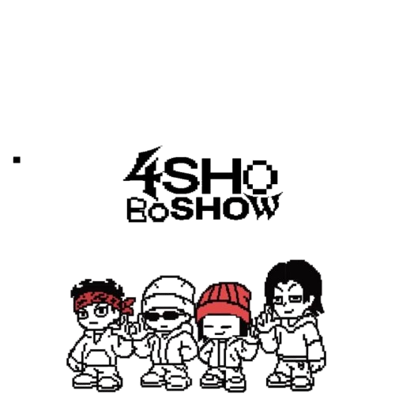

Areta Nurul Hasna
Cita-cita dan Harapan
Cita-cita saya adalah memiliki masa depan yang baik, terutama di bidang yang saya minati seperti kesehatan. Harapan saya, semoga saya bisa terus belajar, berkembang, dan mencapai apa yang saya inginkan serta membanggakan orang tua.
Kesan dan Pesan Kelas IX
Kesan: Banyak pengalaman baru yang berharga. Saya belajar untuk lebih memahami banyak hal, baik dalam pelajaran maupun kehidupan.
Pesan: Semoga kita semua sukses dengan jalan masing-masing dan tidak melupakan kenangan kelas 9. Terima kasih guru-guru!
Profil Singkat
Halo! Namaku Areta Nurul Hasna, saya seorang siswi level 9 SMPIT Al-Haraki .
Tentang Saya
Saya adalah orang dengan kepribadian yang cenderung pemalu, tapi bisa menjadi sangat terbuka ketika sudah merasa nyaman. Saya terus berusaha untuk terus belajar dan memahami pelajaran dengan baik.
Minat dan Bakat
Minat saya di bidang kesehatan dan menari. Saya memiliki kemampuan di tari dan desain(walaupun bukan menggambar), dan terus mencoba mengembangkan kemampuan tersebut.

